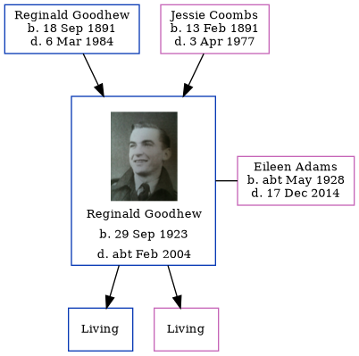

Reginald Norman Goodhew 1923 - c2004
[ Home ] | [ Calendar ] | [ Surnames Index ] | [ Errors ] | [ Family History ]The youngest of 4 children of Reginald Goodhew and Jessie Coombs (a cook), Reginald Goodhew, the third cousin once-removed on the mother's side of Nigel Horne, was born in Alfreton, Derbyshire, England on 29 Sept 19231,2,3 and. He married Eileen Adams (with whom he had 2 surviving children Paul N and Geraldene A) in Surrey, England around Aug 19454. Like his father, he was an aircraft fitter.
During his life, he was living at 18 Pine Road, Rochester, Kent, England on 29 Sept 19391; at 4 Brakey Hill, Bletchingley, Surrey in 19546; and at 9 Whiteknights Road, Reading, Berkshire, England c. 20035.
He died c. Feb 2004 in Reading3.
Parents
- Reginald Arthur was born on 18 Sept 1891
- Jessie May was born on 13 Feb 1891
Citations
- 1939 Register - Findmypast (was the son of the head of the household)
- Derbyshire Registrars Birth Index - Findmypast
- England & Wales deaths 1837-2007 - Findmypast
- England & Wales Marriages 1837-2005 - Findmypast
- UK, Electoral Registers, 2003-2010
- Surrey, England, Electoral Registers, 1832-1962
Media
Reginald Norman Goodhew (2)

Reginald Norman Goodhew

Surrey Electoral Register

1939 Register Transcription - TNA-R39-1769-1769C-019-05
Derbyshire Registrars Birth Index - GBPRS/B/392607812/1
England & Wales births 1837-2006 - BMD/B/1923/4/AZ/000489/063
England & Wales deaths 1837-2007 - BMD/D/2004/1/86013566
England & Wales marriages 1837-2005 - BMD/M/1945/3/AZ/000634/127
Family Tree
Map
Generated by ged2site. Last updated on Jul 3, 2024
Known Issues
Listed in the residence for 1954, but spouse Eileen Adams is not
Listed in the residence for abt 2003, but spouse Eileen Adams is not